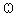
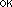

|
Reload
the previous sphere. |

|
 |
|
|
|
Automatic estimations of the sphere; each one
is based on a
different set of point (eg. scalp vertices, cortex vertices, EEG electrodes...).
Select the best estimation, then adjust it manually if necessary. |
|
|
Graphically
edit the sphere: translation along each
axis, and resize.
1) Select one of these buttons
2) Right-click anywhere in the figure and hold the button
3) Move the mouse up or down |
|
Edit the sphere properties manually: center and radius.
For multiple spheres models (EEG only), also edit:
- the conductivity of each shell,
- the radii of the other spheres (relative to the scalp sphere) |

|
Click
on this button when you are done, to start the
forward model computation. |